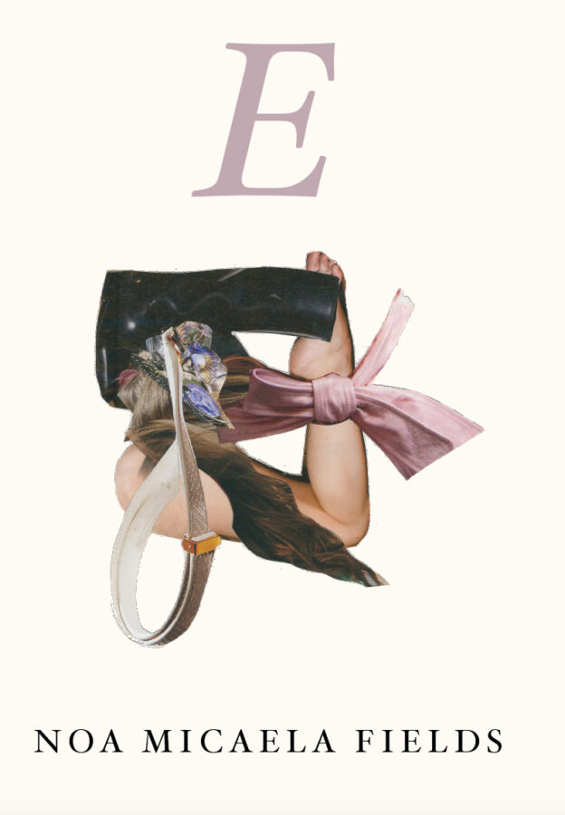

‘E’ LAUNCH PARTY – A Book Release Celebration!
Like an ecstatic game of telephone gone haywire, Noa Micaela Fields’ debut book E (Nightboat Books) practices mishearing as a glitchy hormonal transition of language. Join us for the book launch ritual of enjambment as embodiment as escape art: an evening of ethereal remixes, multimedia performances by collaborators, and euphoric dancing in the naughty clairvoyant loading zone.
Regina Martinez sets the tone during a selective listening hour, followed by live performances by Maya Nguyen, Ruby Que, Noa Micaela Fields, and Barbiefoot. Stick around for a dance party with DJs girly*** and relaxxX. As Vaginal Davis decrees, “E is for epic!”
More info and purchase the book HERE: https://nightboat.org/book/e
7PM Doors + Selective Listening / 8PM Performances / 10PM DANCE PARTY $15 / $10 w/ Student ID – Tickets Available at the Door.
Access notes: There will be ASL interpretation. Please note Elastic Arts is a second floor walkup and is not wheelchair accessible.
Artist Bios
Barbiefoot is a cohort of artists and musicians creating live audio-visual performances that respond to the lived experience of being queer/trans in America. Composed of visual and sound artist Eden Yono, ambient tape improviser MahNu, and violinist and singer Johanna Brock, Barbiefoot’s performance environments evoke ambient soundscapes, harsh noise crash outs, and the electric pulse of the dancefloor through performance art, video, and movement. girly*** is a DJ and performance alias born and currently based in Chicago. Bass, vocal samples, synths, vinyl and community allow girly*** to bend time and bridge gaps between genres bred in the Midwest, Baltimore, UK, the Tri-State area and cyberspace. Listeners should expect the unexpected from a girly*** set. Every blend may not be perfect but every blend will be poetic. SmartBar, Hidden Ideas, Smoke & Mirrors, Podlasie Club and Miyagi Records are a few places girly*** has been witnessed.
Maya Nguyen is a Vietnamese-Russian artist with a focus on sound performance and diasporic making. She gathers speech fragments, urban recordings, body movements, migratory routes, sounds imitating nature sounds, and videos of daily life into open-ended works. Nguyen is the Karl Sczuka Radio Art Research Prize 2024 awardee (SWR/Goethe Institute), Arts Club of Chicago Fellow 2025-26, and recent artist-resident at Saari Residency (Mynämäki, FI 2025) and Zentrum für Kunst und Urbanistik (Berlin 2023). Her work traverses galleries, museums, festivals, and sound venues, notably Vincom Center for Contemporary Art (Hanoi), UCLA New Wight Gallery (Los Angeles), Manzi Art Space (Hanoi), World Forum For Acoustic Ecology 2023 (Florida), Internationales Digitalkunst Festival 2022 (Stuttgart), Jack Straw New Media Gallery (Seattle), and elsewhere. Nguyen holds degrees from the University of Chicago and School of the Art Institute of Chicago.